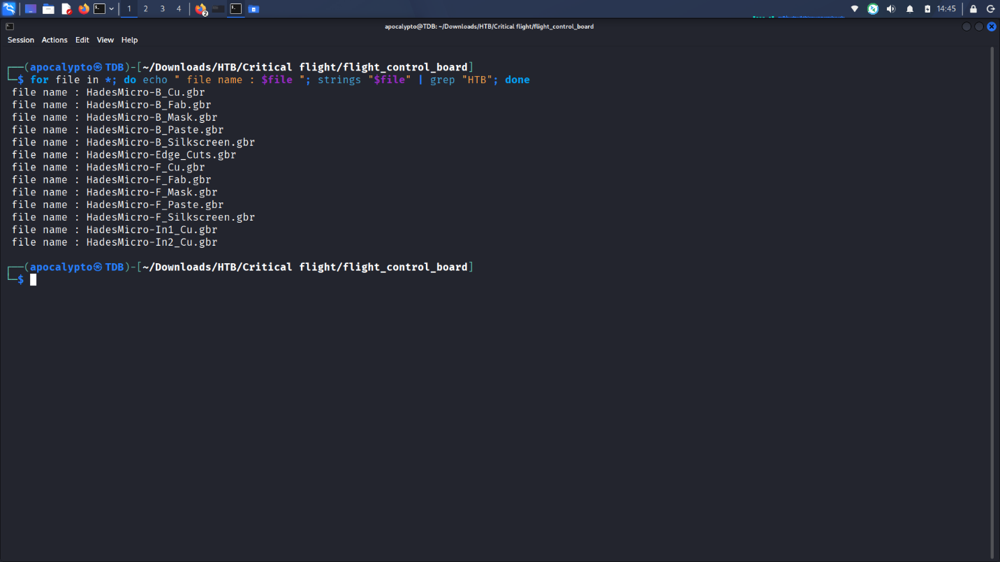
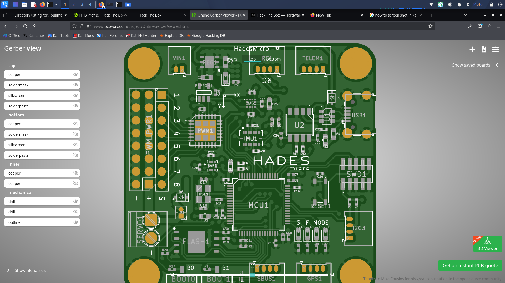
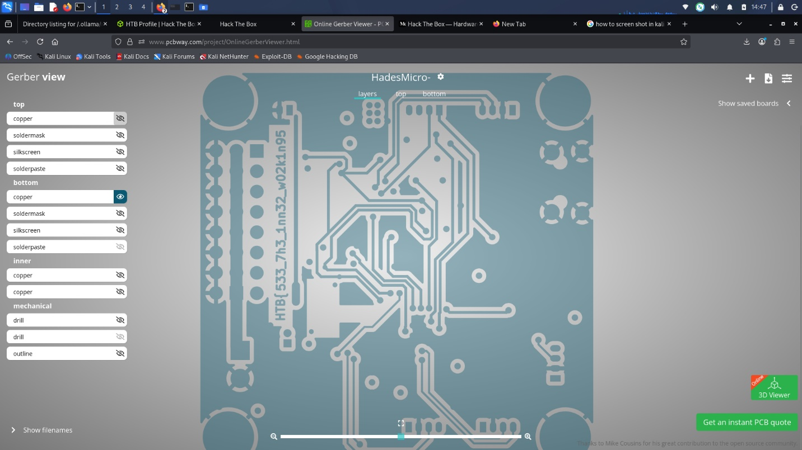
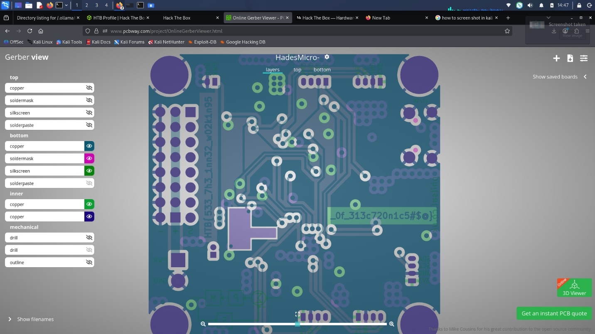

Overview
The challenge archive unzips into a set of .gbr files — the
Gerber format, the industry-standard file format PCB
manufacturers use to describe each physical layer of a board (copper traces,
solder mask, silkscreen text, drill holes, and outline). Each layer of the
"HadesMicro" flight-controller board ships as a separate file, e.g.
HadesMicro-B_Cu.gbr (bottom copper), HadesMicro-F_Silkscreen.gbr
(front/top silkscreen labels), and so on.

.gbr file per PCB layer for the "HadesMicro" flight-controller board.Step 1 — Checking for a plaintext flag first
Gerber files are plain ASCII text, so before reaching for any PCB tooling it's
worth just grepping for the flag format directly. Looping over every file and
running strings
piped into grep "HTB" checks each one for a printable
HTB{...} string.
✓ corrected
$ for file in *; do echo "file name : $file"; strings "$file" | grep "HTB"; done
This returned nothing — no file contains a plain HTB{...} string on
its own. That rules out the simplest case and confirms the flag is encoded
into the board geometry itself (most likely the silkscreen layer, since that's
the layer meant to hold human-readable text on a real PCB).

strings + grep "HTB" across every Gerber file — no plaintext flag present, so it must be embedded in the rendered board layout.Step 2 — Rendering the board
Gerber files need to be rendered to actually see what they draw. Without local
PCB CAD tools installed, PCBWay's free Online Gerber Viewer
works well for this — upload all the .gbr files and it reconstructs
the board with a per-layer toggle panel (top/bottom copper, soldermask,
silkscreen, solderpaste, inner copper layers, and mechanical drill/outline
layers).

Step 3 — First half of the flag on the bottom copper layer
Since it's a low-difficulty challenge, the natural approach is to isolate layers one at a time rather than viewing the fully composited board. Toggling on only the bottom copper layer reveals text traced directly into the copper along the left edge of the board:
Submitting this alone as a flag doesn't work — it's cut off mid-string, which is the signal that more of it is hiding on another layer.

Step 4 — Second half on the inner layers
Enabling additional layers — bottom soldermask, bottom silkscreen, and both
inner copper layers (In1_Cu / In2_Cu) — reveals the
rest of the string near the center of the board, previously hidden underneath
the components on top:

Concatenating both fragments (the shared underscore lines up between them) gives the complete flag.
Flag
Leetspeak for: "see the inner workings of electronics" — a fitting hint that the answer was always in the layers underneath.
Takeaways
- Gerber (.gbr) files are the standard format for describing individual physical layers of a PCB — not a general-purpose CAD format, and not the same thing as a schematic.
- Always check for a plaintext flag first (
strings+grep) before reaching for rendering tools — it's a five-second check that rules out the trivial case. - PCB silkscreen and copper layers can be used to hide data in plain sight; a fully composited render can visually bury text that's only obvious once you isolate individual layers.
- Free online Gerber viewers are a perfectly viable substitute for full PCB CAD software when you just need to inspect layers, not fabricate a board.